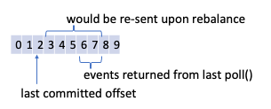

Kafka Consumers
- Applications read data from Kafka using a KafkaConsumer to subscribe to Kafka topics
Consumer Groups
- Kafka consumers are usually part of a Consumer Group
- Basically, each Consumer Group subscribed to a given topic will receive all messages published to the topic
- Each Consumer Group is essentially a different consumer for the given stream
- Consumer Groups also allow you split message load across multiple consumers
- I.e. a work queue design pattern in which the work is distributed to N consumers, each one receiving a subset of the total message set
- In Kafka, when multiple consumers belonging to the same consumer group subscribe for a given topic, each consumer in the group will receive messages from a different subset of partitions in the topic
- If the number of consumers in a Consumer Group is equivalent to the number of partitions of the stream, each consumer will receive messages from a single partition
- If the number of consumers in a Consumer Group is greater than the number of partitions of the stream, there will be idle consumers that will not receive any messages
Partition Rebalance
- If you have multiple partitions and multiple consumers and you add or remove a consumer (or it crashes), clients will most likely start consuming messages from different partitions.
- Moving partition ownership from one consumer to another is called a rebalance
- During a rebalance, consumers cannot consume messages.
The poll() Loop
- At the heart of the Consumer API is the
poll()loop - Once a consumer subscribes to topics, the pool loop is the source of all incoming data and control messages (rebalance, etc.)
- The parameter passed to
poll()is a timeout interval and controls how longpoll()will block if data is not available - If set to
0,poll()will return immediately if data is not available. - Otherwise,
poll()will wait the specified number of milliseconds for data to arrive from the broker before returning - The 1st time a consumer calls
poll()it will join the Consumer Group and obtain a partition assignment. - Each call to
poll()will return a list of records - Typically, the consumer will iterate of the list and process each record
poll()is also responsible for sending heartbeats to the broker - which tell the broker that the client is still alive- For this reason, it's imperitive that processing between
poll()calls is quick and efficient - By default,
enable.auto.commitis enabled, and consumers will automatically commit offsets everyauto.commit.interval.msusing a background thread (which defaults to 5,000 - every 5 seconds)
Commits and Offsets

- When subscribing to a given topic with a given consumer group, Kafka will only return records which have not yet been processed by the given consumer group
- When a consumer has processed a given message, it sends a message to Kafka to update the offset of the partition for the given consumer group. This is called a commit
Automatic Commits
- The simplest, but least robust configuration
- If a consumer is configured with
enable.auto.commitset totrue, every 5 seconds (by default), the consumer will commit the largest offset the client received frompoll(). - The interval is configured via
auto.commit.interval.ms - With automatic commits enabled, a call to
poll()will automatically commit the last offset returned from the previouspoll(). - It's important to remember that each call to
poll()returns a list of records. Hence, with this configuration, it's possible for your application to have committed more records than you've physically processed. - This configuration leads to at-most-once delivery
Commit Current Offset
- Most applications want better control than Automatic Commits provides
- If a consumer is configured with
enable.auto.commitset tofalse, offsets will only be committed explicitly by the application
Synchronous Commit
- The simplest and most reliable commit API is
commitSync()which will commit the latest offset returned bypoll()and will block until the offset is physically committed, throwing an exception if an error occurs. commitSync()is overloaded and also allows you to pass a map of partitions and offsets in which you'd like to commitcommitSync()will retry the commit until it's either successful or encounters a non-retryable error
Asynchronous Commit
- Instead of waiting for the broker to respond, Kafka also provides asynchronous commits via
commitAsync() commitAsync()allows you to pass a callback function which will be called whenever a callback is received.- Like the synchronous commit, by default, it will commit the latest offset returned by
poll(). However, it too is overloaded, and allows you to pass a map of partitions and offsets in which you'd like to commit - Unlike the synchronus commit, the asynchronous commit does not have any retry logic.
- If you use the callback function to request re-tries on errors, you need to be aware of commit order. I.e. there is a potential that a previous commit returns an error after a later commit has already succeeded.
Hybrid Solution - Auto Commit Manually Specified Offset
- As discussed above, when
enable.auto.commit=true, offsets will be committed at specified intervals (defaulting to 5s) - However, since
poll()returns a list of records, it's possible for your consumer to commit messages your application code has yet to actually process - Auto Commit works by committing an offset which is stored in local memory. You can disable the automatic storage this offset by setting
enable.auto.offset.store=falseand instead manually store an offset after you've processed it by callingrd_kafka_offsets_store()-librdkafka
Other Client Configurations
auto.offset.reset- controls the behavior of the consumer when it starts reading from a partition for which it does not have a committed offset or the offset is invalid (usually because the given offset has already been purged).
- The default is
latestwhich means lacking a valid offset, the consumer will start reading from the latest records i.e. the records written after the consumer started. - When set to
earliest, lacking a valid offset, the consumer will read all data in the partition.
max.poll.records- this controls the maximum number of records that a single call topoll()will return